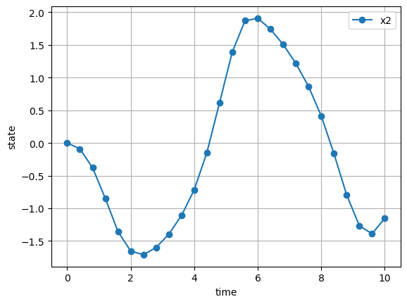
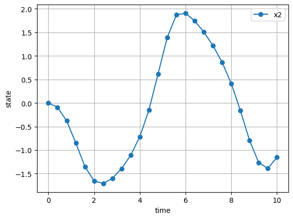

Consider the initial value problem given below where the behaviour of the system is studied with respect to given set of inputs and initial condition. Lets make it parameteric by adding a scalar parameter to the ode and setting its value to zero.
ODE 1
The problem can be solved in 2 ways using Simulate.
eliminate controls from the ode
supply controls evaluated on the grid points
Elimination
Define the number of states and parameter by calling the constructor of the Simulate class. Both the methods are equivalent. Skipping an argument simply sets it to zero.
a=Simulate(n_x=cs.MX(2),n_p=cs.MX(1))
a=Simulate(n_x=cs.MX(2),n_u=cs.MX(0),n_p=cs.MX(1))
Once the states, controls and parameters are defined, set the numerical grid for integration. The state vector will be computed at these time points. tini, tfin and N are the initial time, final time and number of intervals, respectively.
a.set_grid(tini=cs.MX(0),tfin=cs.MX(10),N=cs.MX(25))
The Simulate class has symbolic attributes for the state, control and parameter vector (t,x,u,p) which can be used to define the dynamics of the system. These are MX symbolics offered by casadi. If nonlinear functions like trignometric function are to be applied, they must be imported from the casadi namespace.
f=cs.vertcat((1-a.x[1]**2)*a.x[0]-a.x[1]+0.2*a.t-1,a.x[0])+a.p
a.set_ode(f)
Set the initial condition and parameter value and solve the initial value problem. t is the time grid and a.r['xf'] has the state values at the grid point except for the initial time.
x0=cs.DM([0,0])
a.start(X0=cs.horzcat(x0),P=cs.DM(0))
r=a.r
t=a.t_grid
Plot the state and control time histories.
a.plot_sol()
 

without control elimination
The control input is approximated as a piecewise constant function.
a=Simulate(n_x=cs.MX(2),n_u=cs.MX(1),n_p=cs.MX(1))
a.set_grid(cs.MX(0),cs.MX(10),cs.MX(25))
f=cs.vertcat((1-a.x[1]**2)*a.x[0]-a.x[1]+a.u,a.x[0])+a.p
a.set_ode(f)
x0=cs.DM([0,0])
a.start(X0=cs.horzcat(x0),U=cs.linspace(-1,1,25).T,P=cs.DM(0))
r=a.r
t=a.t_grid
a.plot_sol()


ODE 2
b=Simulate(cs.MX(1))
b.set_grid(tini=cs.MX(0),tfin=cs.MX(10),N=cs.MX(100000))
f=2*b.t
b.set_ode(f)
x0=cs.DM([0])
b.start(x0)
b.plot_sol()
print('Global error x(N+1) for xdot=2t:',cs.evalf(b.r['xf'][-1]-100))
Global error x(N+1) for xdot=2t: 0.0016011

The default values for cvodes is 0.001 and 0.1 for absolute and relative tolerance, respectively. By increasing the tolerance global error can be reduced.
b.start(x0,tol=1e-12)
Global error x(N+1) for xdot=2t: 4.81748e-12
Lotka voltera/prey-predator model
d=Simulate(n_x=cs.MX(2),n_p=cs.MX(2))
d.set_grid(cs.MX(0),cs.MX(15),cs.MX(1000))
f=cs.vertcat(d.x[0]-d.p[0]*d.x[0]*d.x[1],-d.x[1]+d.p[1]*d.x[0]*d.x[1])
d.set_ode(f)
x0=cs.DM([20,20])
p=cs.DM([0.01,0.02])
d.start(X0=x0,P=p,tol=1e-8)
#d.plot_sol()
plt.plot(cs.evalf(d.r['xf'][0,:]),cs.evalf(d.r['xf'][1,:]),'o')
plt.show()